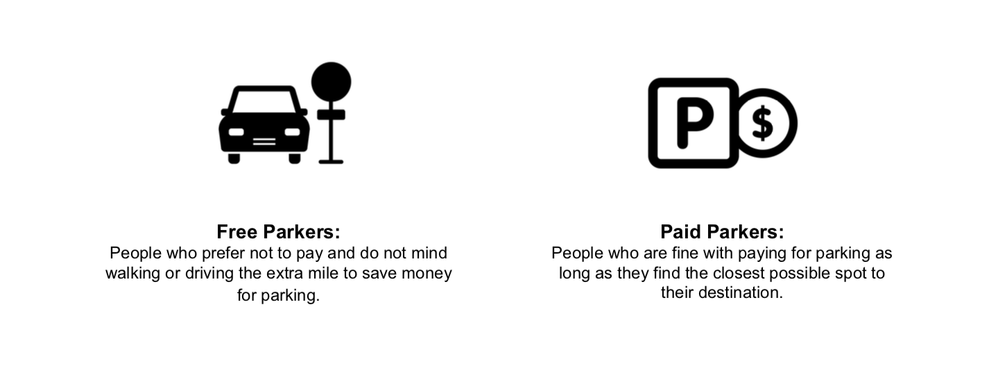
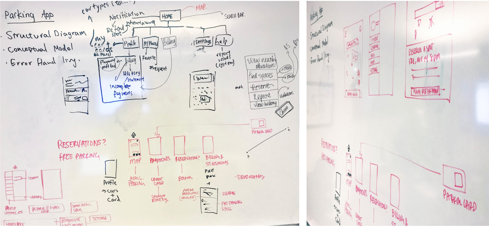
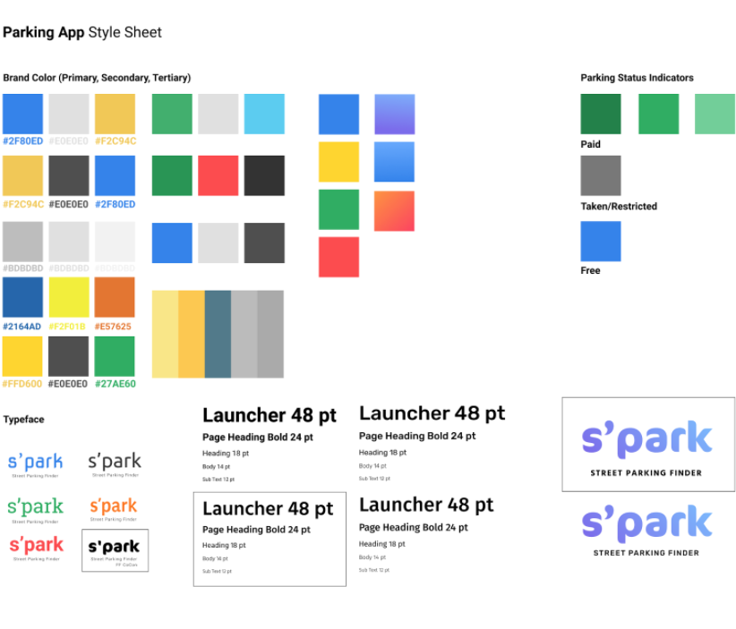
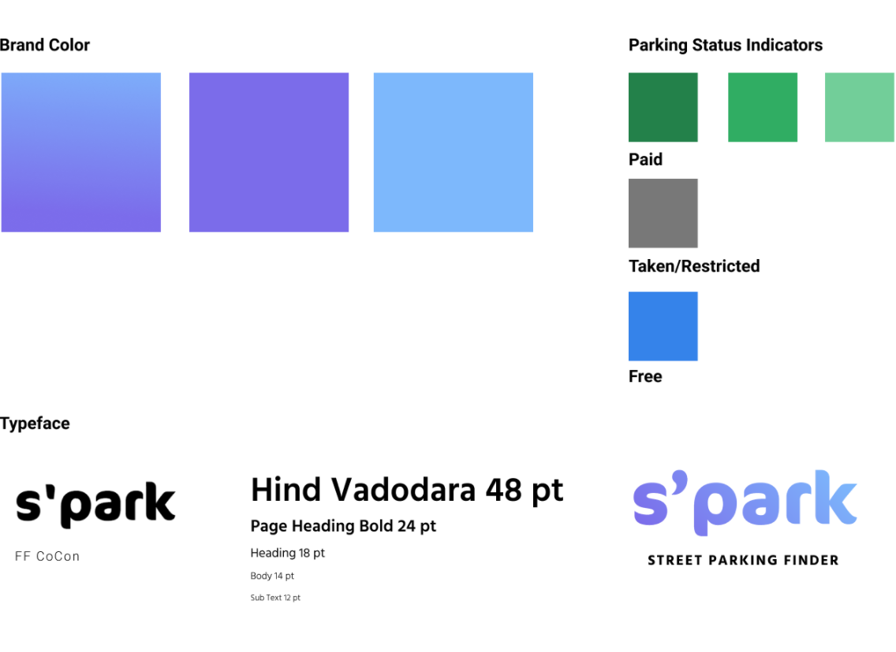

S'park
Street Parking App Design Sprint, Fall 2017
S'park is for drivers. It is an app that allows you to find, pay for, and keep track of the status of parking spots near your destination.
"Mayor Jorge O. Elorza revealed a proposed five-year capital improvement plan Tuesday that calls for spending between $16 million and $34 million a year on repairs to sidewalks, sewers, bridges and other infrastructure improvement projects." – John Hill, Providence Journal Jan. 2017
Conceptual Models
The initial assignment was to document any creative process and create a user journey map based on observations. I chose "looking for parking" and pitched it to the class the following week. After forming a group who was interested in the idea, we began looking conceptual models that our app could leverage. We also came up with survey questions that would help us better understand the people we were designing for.
Interviews & Surveys
We interviewed 15 Providence drivers, and collected 32 survey responses from nonlocal drivers. Here are some of our findings: Most people have had issues with unpaid and expired meters. People try to avoid paid parking where there is free parking. If people pay with card, they tend to pay for the estimated maximum time. People use street parking either infrequently or very frequently, few in-betweens. The most important factor when looking for street parking is low pricing and closer proximity of parking spot to their destination.
Survey results allowed us to identify scenarios we need to take special care to prevent moving forward. Some things to keep in mind: when a person tries to reserve a spot that is already taken, when they are new to an area and do not know where the paid and free parking spots are, when they cannot tell the difference between paid and free parking, when they have more than one car and wish to register all of them, when they browse parking spots and attractions before they start driving to their destination, when they have overdue payments, how s'park will charge back and forth between different cars, etc.



We constructed journey maps for two Providence drivers that represent an average of those we interviewed. Kim is willing to pay for parking if the spot is close to her desination. Ron would rather park further to avoid paid parking, but needs to keep track of time zones and restricted parking. Both run into common issues that come up involving parking meters, color zones, and finding parking spots.

Information Architecture & Wireframing
Post-research phase, our group came together to reevaluate product objectives and success metrics. Given the wealth of navigation and parking apps out there, how will S'park stand out? With this question in mind, we wanted the app to help people save time and become more aware of parking spaces, availability and hotspots near their desination.
As such, our app will achieve the objectives above by providing real-time feedback on parking availability in set location zones, accurately display parking prices, merge existing hardware (EZ-pass and parking meters) with our digital interface to syncronize overall payment experience, enable multiple payment methods and time extension, and encourage traffic efficiency by adjusting parking prices based on parking availability.

Mockup Screens
Going off of our information architecture, we mocked up screens of the key features we were going to include in the app. This is what we imagine the app to look like.


Brand Identity
Our group met right before Thanksgiving break to put together a finalized style sheet. We also allocated screens for each team member to work on over the weekend based on the colors and typeface above. We decided on a cool blue and purple gradient as our brand color, and the FF CoCon (logo) and Hind Vadodara (standard) typefaces. The overall look feels familiar and friendly, while departing from popular and overused app styles (ex: 50 shades of dad jeans blue, and San Francisco/Roboto/Helvetica).

Working Prototype
Here is our working prototype of the S'park app! Everything was made on Figma, so feel free to play around with it. The prototype contains 43 screens that encapsulates the main features demonstrating how the app will work. If the link still loading, please enjoy the following recording of one of our team members using S'park to find street parking on Thayer Street.